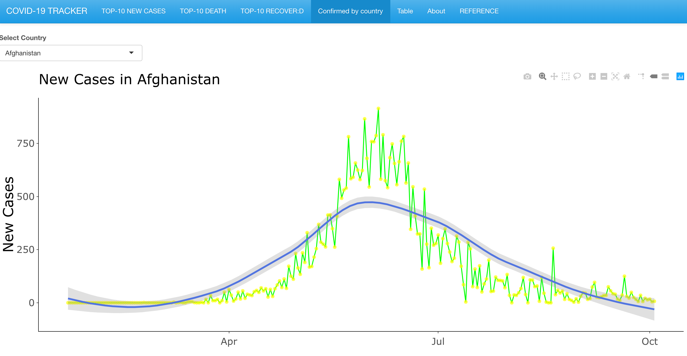

The goal of covid package is to provid the covid-19 data and function for the people to explore. and it contain a coronavirus dateset, which have 2000960 observations and 9 variables. Docs: data ,data_type ,lat ,location ,location_code ,location_code_type,location_type,long ,value. data:the data data_type:Data in Yyy lat:Latitude of center of geographic region, defined as either country or, if available, province locationName of province/state, for countries where data is provided split across multiple provinces/states
location_code:Name of country/region location_code_type:the type of location location_type:country/state long:Longitude of center of geographic region, defined as either country or, if available, province valueNumber of cases on given date
Installation
You can install the released version of covid_tracker from CRAN with:
install.packages("covid")
And the development version from GitHub with:
# install.packages("devtools") devtools::install_github("etc5523-2020/r-package-assessment-cgon0007")
Example
This is a basic example which shows you how to solve a common problem:
library(covid) library(tibble) coronavirus #> # A tibble: 200,960 x 9 #> date location location_type location_code location_code_t… data_type value #> <chr> <chr> <chr> <chr> <chr> <chr> <dbl> #> 1 7/6/… Afghani… country AF iso_3166_2 cases_new 791 #> 2 6/6/… Afghani… country AF iso_3166_2 cases_new 582 #> 3 5/6/… Afghani… country AF iso_3166_2 cases_new 915 #> 4 18/5… Afghani… country AF iso_3166_2 deaths_n… 4 #> 5 8/6/… Afghani… country AF iso_3166_2 cases_new 575 #> 6 12/6… Afghani… country AF iso_3166_2 cases_new 656 #> 7 9/6/… Afghani… country AF iso_3166_2 cases_new 542 #> 8 4/6/… Afghani… country AF iso_3166_2 cases_new 787 #> 9 17/5… Afghani… country AF iso_3166_2 deaths_n… 1 #> 10 19/5… Afghani… country AF iso_3166_2 deaths_n… 5 #> # … with 200,950 more rows, and 2 more variables: lat <dbl>, long <dbl> n_countries(coronavirus) #> [1] 267 ## basic example code
shiny part
here is the picture of shiny –the top_10 new cases and new case trend plot
.  .
.
. 
. User can choose to run shinyChromosome installed on local computers (Windows, Mac or Linux) for a more preferable experience. hint(the app means that:covid19-tracker-shinyapp) Step 1: Install R and RStudio
Before running the app you will need to have R and RStudio installed (tested with R 3.5.0 and RStudio 1.1.419). Please check CRAN (https://cran.r-project.org/) for the installation of R. Please check https://www.rstudio.com/ for the installation of RStudio.
Step 2: Install the R Shiny package and other packages required by shinyChromosome
Start an R session using RStudio and run these lines:
try an http CRAN mirror if https CRAN mirror doesn’t work
install.packages("shiny") install.packages("ggplot2") install.packages("shinythemes") install.packages("coronavirus")
install shiny:covid_tracker
install.packages("devtools") devtools::install_github("~cgon0007/app", force=TRUE)
Step 3: Start the app
Start an R session using RStudio and run these lines:
shiny::runGitHub("app", "cgon0007")
This command will download the code of shinyapp from GitHub to a temporary directory of your computer and then launch the app in the web browser. Once the web browser was closed, the downloaded code of app would be deleted from your computer. Next time when you run this command in RStudio, it will download the source code of appcovid19tracker from GitHub to a temporary directory again. This process is frustrating since it takes some time to download the code of shinyChromosome from GitHub.
Users are suggested to download the source code of shinyChromosome from GitHub to a fixed directory of your computer, such as ‘E:’ on Windows.a zip file named ‘app-master.zip’ would be downloaded to the disk of your computer. Move this file to ‘E:’ and unzip this file. Then a directory named ‘app’ would be generated in ‘E:’.
Then you can start the app by running these lines in RStudio.
library(shiny) runApp("E:/apps/app-master", launch.browser = TRUE)
REFERENCE
citation
h2(“shiny,coronavirus,tidyverse,plotly,ggplot2”) h4(" Winston Chang, Joe Cheng, JJ Allaire, Yihui Xie and Jonathan McPherson (2020). shiny: Web Application Framework for R. R package version 1.5.0. https://CRAN.R-project.org/package=shiny A BibTeX entry for LaTeX users is @Manual{, title = {shiny: Web Application Framework for R}, author = {Winston Chang and Joe Cheng and JJ Allaire and Yihui Xie and Jonathan McPherson}, year = {2020}, note = {R package version 1.5.0}, url = {https://CRAN.R-project.org/package=shiny}, }“), h1(”.“), h4(”Wickham et al., (2019). Welcome to the tidyverse. Journal of Open Source Software, 4(43), 1686, https://doi.org/10.21105/joss.01686 A BibTeX entry for LaTeX users is @Article{, title = {Welcome to the {tidyverse}}, author = {Hadley Wickham and Mara Averick and Jennifer Bryan and Winston Chang and Lucy D’Agostino McGowan and Romain François and Garrett Grolemund and Alex Hayes and Lionel Henry and Jim Hester and Max Kuhn and Thomas Lin Pedersen and Evan Miller and Stephan Milton Bache and Kirill Müller and Jeroen Ooms and David Robinson and Dana Paige Seidel and Vitalie Spinu and Kohske Takahashi and Davis Vaughan and Claus Wilke and Kara Woo and Hiroaki Yutani}, year = {2019}, journal = {Journal of Open Source Software}, volume = {4}, number = {43}, pages = {1686}, doi = {10.21105/joss.01686}, } “), h1(”.“), h4(” C. Sievert. Interactive Web-Based Data Visualization with R, plotly, and shiny. Chapman and Hall/CRC Florida, 2020. A BibTeX entry for LaTeX users is @Book{, author = {Carson Sievert}, title = {Interactive Web-Based Data Visualization with R, plotly, and shiny}, publisher = {Chapman and Hall/CRC}, year = {2020}, isbn = {9781138331457}, url = {https://plotly-r.com}, }“), h1(”.“), h4(”Rami Krispin and Jarrett Byrnes (2020). coronavirus: The 2019 Novel Coronavirus COVID-19 (2019-nCoV) Dataset. R package version 0.3.0. https://CRAN.R-project.org/package=coronavirus A BibTeX entry for LaTeX users is @Manual{, title = {coronavirus: The 2019 Novel Coronavirus COVID-19 (2019-nCoV) Dataset}, author = {Rami Krispin and Jarrett Byrnes}, year = {2020}, note = {R package version 0.3.0}, url = {https://CRAN.R-project.org/package=coronavirus}, }“), h1(”.“), h4(”H. Wickham. ggplot2: Elegant Graphics for Data Analysis. Springer-Verlag New York, 2016. A BibTeX entry for LaTeX users is @Book{, author = {Hadley Wickham}, title = {ggplot2: Elegant Graphics for Data Analysis}, publisher = {Springer-Verlag New York}, year = {2016}, isbn = {978-3-319-24277-4}, url = {https://ggplot2.tidyverse.org}, }")